방송통신기사 (2022-03-12 기출문제)
1과목: 디지털 전자회로
1. 정류회로 출력 성분 중 교류인 리플을 제거하기 위해 정류회로 다음 단에 접속되는 회로는 무엇인가?
- 평활회로
- 클램핑회로
- 정전압회로
- 클리핑회로
(정답률: 96%)

2. 다음과 같은 회로의 입력에 120[Vrms], 60[Hz] 정현파 신호가 인가 되었을 때, 출력에서 리플전압의 피크-피크값은 약 몇 [V]인가? (단, 다이오드에 걸리는 전압강하는 무시한다.)
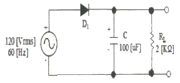
- 11.57[V]
- 12.57[V]
- 13.57[V]
- 14.57[V]
(정답률: 70%)
3. 다음은 트랜지스터 직렬전압안정회로를 나타내었다. 부하전압(Vo)을 5[V]로 유지하기 위한 제너다이오드의 항복전압은 얼마인가? (단, 트랜지스터의 베이스-이미터 전압 VBE = 0.7[V]이고, 입력전압 Vin= 10[V]~20[V] 까지 변한다고 가정한다.)
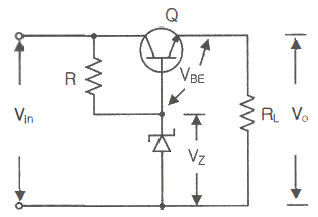
- 5[V]
- 5.7[V]
- 10[V]
- 10.5[V]
(정답률: 86%)
4. 다음 중 증폭기에 대한 설명으로 옳은 것은?
- 입력신호의 에너지를 증가시켜 출력 측에 큰 에너지의 변화로 출력하는 회로이다.
- 출력 내에 포함되어 있는 리플성분을 제거시켜 일정한 크기의 전압을 유지시키는 회로이다.
- 교류전압을 사용하기 적당한 직류전압을 변환하여 주는 회로이다.
- 출력부하전류 및 온도에 상관없이 일정한 직류 출력전압을 제공하는 회로이다.
(정답률: 84%)
5. 다음 그림은 하이브리드 4단자망의 등가 회로이다. 여기에서 V1을 나타내는 식은?
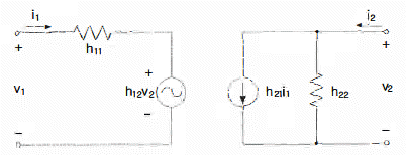
- h12i1 + h11v2
- h21i1 + h22v2
- h22i1 + h21v2
- h11i1 + h12v2
(정답률: 66%)
6. 3단 종속 전압증폭기의 이득이 각각 10배, 20배, 50배일 때 종합증폭도와 종합이득은 각각 얼마인가?
- 종합증폭도는 10배, 종합이득은 20[dB]
- 종합증폭도는 100배, 종합이득은 40[dB]
- 종합증폭도는 1,000배, 종합이득은 60[dB]
- 종합증폭도는 10,000배, 종합이득은 80[dB]
(정답률: 71%)
7. 다음 중 부궤환 조건으로 옳은 것은? (단, A : 무궤환시증폭기 이득, β : 궤환율이다.)
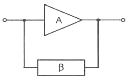
- (1+βA)2 ＞ 1
- (1+βA) ＞ 1
- (1+βA) ＜ 1
- (1+βA)2 ＜ 1
(정답률: 71%)
8. 다음 중 연산증폭기의 응용회로가 아닌 것은?
- 부호변환기
- 배수기
- 교류전류 플로워
- 전압-전류 변환기
(정답률: 85%)
9. 다음 증폭기 회로에서 최대 전력 소비 정격은 약 얼마인가?
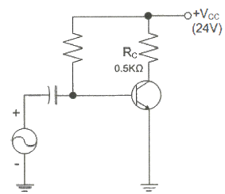
- 0.1[W]
- 0.3[W]
- 0.5[W]
- 1.0[W]
(정답률: 62%)
10. 다음 비정현파 발진회로의 (가)와 (나)에서의 출력을 바르게 나타낸 것은?
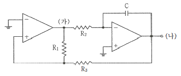
- (가) 임펄스, (나) 계단함수
- (가) 구형파, (나) 삼각파
- (가) 계단함수, (나) 임펄스
- (가) 삼각파, (나) 구형파
(정답률: 80%)
11. 다음 글미은 정보 전송 기술에서 어떤 변조 방식의 변조파인가?
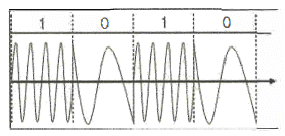
- 진폭 천이 변조
- 주파수 천이 변조
- 폭 천이 변조
- 위상 천이 변조
(정답률: 87%)
12. DPSK 복조에 주로 이용되는 검파방식은?
- 포락선 검파
- 동기 검파
- 동기직교 검파
- 차동위상 검파
(정답률: 64%)
13. 디지털 신호의 정보 내용에 따라 반송파의 위상을 변화시키는 변조 방식으로 2원 디지털 신호를 2개씩 묶에 전송하는 QPSK 변조방식의 반송파 위상차는?
- 45[°]
- 90[°]
- 180[°]
- 270[°]
(정답률: 92%)
14. 포스터 실리 검파 회로와 비검파 회로와의 검파 감도 비는?
- 1:3
- 3:1
- 1:2
- 2:1
(정답률: 80%)
15. 다음 그림과 같은 회로의 출력 파형(Vo)의 형태는?
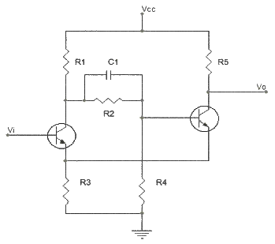
- 정현파
- 삼각파
- 구형파
- 톱니파
(정답률: 70%)
16. 2진수 (101101)2을 10진수로 올바르게 표시한 것은?
- 40
- 45
- 50
- 55
(정답률: 79%)
17. 인에이블(Enable) 입력을 가진 해독기(Decoder)는 무엇과 동일한가?
- 플립플롭
- 멀티플렉서
- 디멀티플렉서
- 전가산기
(정답률: 72%)
18. 다음 그림과 같은 회로의 논리 동작으로 맞는 것은?
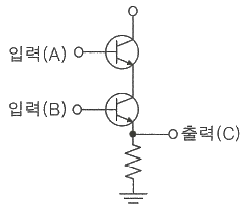
- OR
- AND
- NOR
- NAND
(정답률: 74%)
19. 비동기식 5진 카운터(Counter) 회로는 최소 몇 개의 플립플롭(Flip-Flop)이 필요한가?
- 4
- 3
- 2
- 1
(정답률: 72%)
20. 다음 중 동기식 카운터로 이용이 불가능한 것은?
- 리플 계수기
- BCD 계수기
- 2진 계수기
- 2진 업다운 계수기
(정답률: 67%)
2과목: 방송통신 기기
21. 다음 중 방송망을 구성하는 전송설비가 아닌 것은?
- TBC
- STL
- FPU
- SNG
(정답률: 69%)
22. 다음 중 음향설비가 갖추어야 할 조건 중 틀린 것은?
- 외부에 대한 누음이 잘 될 것
- 사용목적에 적합한 울림의 길이와 음질을 갖출 것
- 조용한 환경일 것
- 저음역의 고유진동에 부밍(Booming)이나 울림 등이 없을 것
(정답률: 83%)
23. 영상신호의 압축은 아래 항목들을 효율적으로 제거함으로써 얻어질 수 있는데 이중 관련이 없는 항목은?
- 색신호간 중복성 제거
- 공간적 중복성 제거
- 통계적 중복성 제거
- 주파수 대역별 중복성 제거
(정답률: 80%)
24. 전자기파 신호의 주파수가 높을수록 나타나는 현상으로 틀린 것은?
- 강우 감쇠가 커진다.
- 파장이 짧아진다.
- 직진성이 강해진다.
- 회절현상이 강해진다.
(정답률: 77%)
25. 다음의 구성에서 곱셈기 출력신호가 점유하는 주파수 대역(kHz)으로 옳은 것은? (단, fc = 104[Hz])
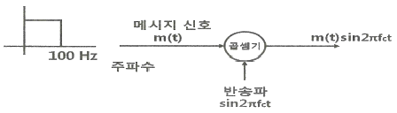
- 0~0.1
- 9.9~10.1
- 19.9~20.1
- 29.9~30.1
(정답률: 65%)
26. 다음 중 AM 방송의 디지털화에 대한 설명으로 틀린 것은?
- DRM(Digital Radio Mondial)은 중단파방송의 디지털오디오방송 표준을 제정하는 단체이다.
- IBOC방식으로도 AM에 대한 디지털화가 가능하다.
- 오디오 품질 수준을 FM 수준으로 향상시켜 제공할 수 있다.
- AM 이외의 대역을 할당하여야만 디지털화 할 수 있다.
(정답률: 80%)
27. 다음 중 FM송신기의 부가회로에 속하지 않는 것은?
- 순시 편이 제어회로(IDC)
- 프리엠퍼시스 회로
- 전치 보상기 회로
- 스켈치 회로
(정답률: 83%)
28. 적색(Red), 녹색(Green), 청색(Blue)의 빛을 혼합하면 어떤 색이 되는가?
- 검정색
- 흰색
- 노랑색
- 청록색
(정답률: 84%)
29. 디지털 오디오 신호의 S/N 비를 정하는 관계식으로 적합한 것은? (단, n은 샘플 비트수)
- (6.02 × n) + 1.76
- (7.02 × n) + 1.76
- (8.02 × n) + 1.76
- (9.02 × n) + 1.76
(정답률: 83%)
30. 다음 중 디지털 TV의 특징에 대한 설명으로 옳지 않은 것은?
- 아날로그 TV방식보다 잡음에 강하다.
- 디지털 전송은 아날로그 신호를 0과 1로 구성된 디지털 신호로 변환하여 전송한다.
- 문자, 영상, 음향 데이터의 디지털 신호를 압축하여 전송할 수 있다.
- 디지털 신호로 전송된 신호는 수신기에서 원래의 영상 및 음향 신호로 변환할 필요가 없으며, 이는 디지털 TV 시스템의 장점에 속한다.
(정답률: 70%)
31. 다음 중 방송제작에 사용되는 조명(라이트)의 종류와 설명으로 틀린 것은?
- Base Light는 전체를 균일하게 밝게 해주는 조명이다.
- Key Light는 주광선으로서, 주요 피사체의 밝기를 얻기 위해서 중요한 역할을 한다.
- Back Light는 Key Light에 의해 생기는 반대방향의 빛으로 피사체를 배경으로부터 떠오르게 하거나, 디테일을 강조하기 위해 사용한다.
- Set Light는 피사체의 정면 아래쪽으로부터의 빛이다.
(정답률: 69%)
32. 다음 중 위성방송(DBS : Direct Broadcast Satellite)을 수신하기 위해서 TV와 연결하는 다기능 방송수신 장치는?
- Time Base Corrector
- Set-Top Box
- CIN Diplexer
- Yagi Antenna
(정답률: 85%)
33. 유선방송(CATV)에서 중계 회선의 주요 용도가 아닌 것은?
- 재송신 신호 수신점과 헤드 앤드간의 전송
- 스튜디오와 헤드 앤드간의 전송
- 스튜디오와 주조정실간의 전송
- 헤드 앤드와 헤드 앤드간의 전송
(정답률: 82%)
34. 다음 중 IPTV 서비스 구조에 대한 설명으로 바르지 못한 것은?
- 서비스 플랫폼은 크게 헤드 엔더, 백본 네트워크, 엑세스 네트워크, 가입자 장치의 4가지 요소로 구성된다.
- 클라이언트-서버의 구조는 단순하고 망 기능이 제한되어 있는 관계로 서비스 도입이 불편한 단점을 갖는다.
- 서비스를 위한 모든 기능은 가입자 단말과 헤드 엔더 간에 이루어지는 일종의 클라이언트-서버 모델로 동작한다.
- 망은 단순히 멀티캐스트 스트리밍의 품질을 보장하여 전달하고 필요에 따라 사용자가 원하는 채널을 엑세스 망에서 브렌칭하는 기능만을 담당한다.
(정답률: 82%)
35. 다음 중 IPTV 방송의 서비스품질(QoS)을 얻기 위한 지표로 틀린 것은?
- 변조
- 지연 시간 또는 지연
- 지터
- 트래픽 또는 패킷 손실
(정답률: 88%)
36. 다음 중 IPTV 방송에 대한 설명으로 틀린 것은?
- 영상의 인코딩이 요구된다.
- 패킷화하여 인터넷 프로토콜에 연속적으로 전송한다.
- 인코딩, 패킷, 스트리밍, 디코딩 등의 기술을 필요로 한다.
- 사용자 마다 하나의 비디오 스트림이 필요한 것이 멀티 캐스트 방식이다.
(정답률: 87%)
37. IPTV의 STB(Settop box)는 4개의 계층(Layer)으로 구성되는데 이와 관련이 없는 것은?
- 콘텐츠 계층 – EPG, 홈 네트워킹, VoIP
- 어플리케이션 계층 – 양방향 및 부가 서비스 구현
- 미들웨어 계층 – ASAP, MHP 등 방송어플리케이션 개발환경
- 하드웨어 계층 – CPU, RAM 등의 STB구성 하드웨어
(정답률: 68%)
38. 다음 중 기본적인 오디오의 발생 및 측정기가 아닌 것은?
- 프로토콜 아날라이저
- 저주파 신호발생기
- 오실로스코프
- 볼트미터
(정답률: 69%)
39. 다음 중 음향 측정장비가 아닌 것은?
- VU 미터
- 피크 미터
- PPM 미터
- 멀티 테스터
(정답률: 78%)
40. 다음 중 단위로 [dB]를 사용하지 않는 것은?
- 감쇠량
- 전하량
- 전계강도
- 공중선의 이득
(정답률: 67%)
3과목: 방송미디어 공학
41. 다음 중 비디오, 오디오, 데이터방송을 제공하는 디지털 멀티미디어 방송(DMB)에서 사용가능한 주파수 대역으로 부적절한 것은?
- 중파라디오(AM) 대역
- VHF-TV 대역
- L-BAND
- S-BAND
(정답률: 71%)
42. 다음 중 디지털 방송 시스템의 특성이 아닌 것은?
- 네트워크 기반의 통합 제작 시스템
- 효율적 자료관리 시스템
- 방송 제작 및 송출시스템의 자동화 용이
- 선형 편집 시스템활용 증가
(정답률: 83%)
43. 다음 중 주파수에 의한 분류에 해당하지 않는 방송은?
- 다중방송
- 단파방송
- 중파방송
- 초단파방송
(정답률: 81%)
44. 다음 중 경량이며 주파수 특성이 우수하고, 진동판이 소형이기 때문에 캡슐형태의 초소형마이크 제작도 가능한 마이크의 유형은?
- 콘덴서마이크
- 무빙코일형마이크
- 리본 마이크
- 카본 마이크
(정답률: 86%)
45. 다음 중 미국식 디지털TV 표준(ATSC)의 오디오 압축 방식은?
- DAB
- SPDIF
- AC-3
- PCM
(정답률: 87%)
46. 다음 중 Nyquist Filter에 대한 설명으로 틀린 것은?
- 대역이 제한된 주파수영역에서 심벌간 간섭이 발생하지 않는 이상적인 시간영역 파형은 Sinc 형태이다.
- Nyquist필터는 점유대역폭이 가장 넓고 시간영역에서 필터의 구현이 용이하다.
- 실제 통신시스템에서는 Raised Cosine Filter를 사용하여 r(Roll-off Factor)값을 조정하여 사용한다.
- r=0인 경우가 Nyquist Filter이며, r값이 커지면 시간영역에서 구현이 용이하나 주파수 효율이 떨어진다.
(정답률: 80%)
47. 다음 중 화면에서 여름의 대낮이나 햇볕의 강함을 강조하며 명암의 대비를 확실히 하기 위해 밝은 곳은 더 밝게, 어두운 곳은 더 어둡게 느끼게 하는 조명기법으로 가장 적절한 것은?
- 하이 키(High Key)
- 로우 키(Low Key)
- 플랫 키(Flat Key)
- 하드 키(Hard Key)
(정답률: 72%)
48. 조명기구를 매다는 것을 목적으로 하는 현가장치의 방식에 속하지 않는 것은?
- 그리드 방식
- 슬라이드 레일방식
- 배턴방식
- 로터리 스위치 방식
(정답률: 79%)
49. 다음 중 직사광에 해당하는 빛을 내며 빛의 방향성, 명암이나 그림자에 의한 입체감 등을 표현하기 위한 조명기구로 가장 적절한 것은?
- 스포트 라이트(Flood Light)
- 플러드 라이트(Flood Light)
- 베이스 라이트(Base Light)
- 이펙트 라이트(Effect Light)
(정답률: 80%)
50. 다음 중 마이크의 지향성에 관한 설명 중 틀린 것은?
- 교향악단 연주에서 특정 악기의 수음을 위해 무지향성 마이크를 사용한다.
- 마이크의 지향성 패턴은 음파의 입사각도에 대한 감도의 변화를 말한다.
- 음파의 입사방향에 의한 감도가 변하지 않을 때는 무지향성이다.
- 지향성은 희망하는 방향에서 오는 소리의 수음감도는 높이고 희망하지 않는 방향에서 오는 수음감도는 저하시키는 것이 목적이다.
(정답률: 79%)
51. 다음 중 이미지 파일 포맷이 아닌 것은?
- BMP
- PCX
- JPEG
- AVI
(정답률: 87%)
52. 주어진 이미지의 각 픽셀들의 가지는 밝기 값의 분포 상황을 나타내는 것을 무엇이라 하는가?
- 이미지 히스토그램
- 포인트 프로세싱
- 균일화(Equalization)
- 솔라이징(Solarizing)
(정답률: 87%)
53. MP3 파일은 다음 중 어디에 해당하는 오디오 압축 기술인가?
- MPEG-1
- MPEG-2
- MPEG-4
- MPEG-7
(정답률: 83%)
54. 다음 중 폐쇄형 자막(Closed Caption)방송에 대한 설명으로 틀린 것은?
- 자막데이터가 영상과 분리되어 별도로 제공된다.
- 화면에 말풍선을 이용하여 표시하는 자막이다.
- 시청자가 원하는 경우에만 자막을 볼 수 있다.
- 청각 장애인을 위해 실시간으로 문자로 방송해 주는 서비스이다.
(정답률: 69%)
55. 가변길이 호프만 코딩방법을 이용해서 “SSANSRYOUNG”라는 단어를 부호화하여 압축율을 높이고자 한다. 가장 짧은 가변 길이로 부호화 될 알파벳은 무엇인가?
- S
- A
- N
- G
(정답률: 84%)
56. CAS(Conditional Access System)의 혼화(Scrambling) 과정에서 사용되는 Control Word를 수신측에 전달하는 메시지는?
- ECM
- EMM
- QCM
- DRM
(정답률: 83%)
57. 다음 중 PSIP(Program and System Information Protocol)에서 규정하는 테이블이 아닌 것은?
- MGT(Master Guide Table)
- RRT(Rating Region Table)
- STT(System Time Table)
- CAR(Conditional Access Table)
(정답률: 62%)
58. 다음 중 지상파 UHDTV 방송표준에 부합하지 않는 것은?
- 해상도 : 3,840×2,160
- 화면비 : 16:9
- 영상압축방식 : HEVC
- 음성압축방식 : MP3
(정답률: 74%)
59. 다음 중 하나의 채널로 할당된 주파수 대역폭에서 복수의 채널을 송출하는 것을 무엇이라고 하는가?
- TV포털서비스
- 데이터 방송 서비스
- 멀티모드서비스
- 다주파 대역폭 서비스
(정답률: 63%)
60. 인터넷을 통해 TV 프로그램, 영화 등의 다양한 미디어 콘텐츠를 제공하는 서비스를 무엇이라 하는가?
- ISM
- ITT
- OMS
- OTT
(정답률: 80%)
4과목: 방송통신 시스템
61. 다음 문장에서 설명하고 있는 것으로 옳은 것은?
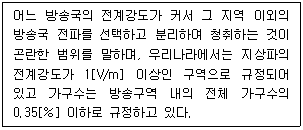
- 서비스에어리어(Service Area)
- 블랭킷에어리어(Blanket Area)
- 최고사용주파수(Maximum Usable Frequency)
- 최적운용주파수(Frequency Of Optimum Traffic)
(정답률: 86%)
62. 다음 중 디지털방송시스템의 특징이 아닌 것은?
- 방송의 다채널
- 방송의 고품질
- 복조과정이 잡음에 약함
- 방송의 스크램블화로 수신제한 가능
(정답률: 87%)
63. 64QAM 변조방식의 전송밀도[bps/Hz]는 얼마인가?
- 3
- 4
- 6
- 8
(정답률: 80%)
64. 통신시스템의 출력에 있어서 기본파의 진폭이 10[V]이고, 제2고조파의 진폭이 4[V], 제3고조파의 진폭이 3[V]일 때 송신기의 전체 고조파 왜율은?
- 20[%]
- 30[%]
- 40[%]
- 50[%]
(정답률: 77%)
65. 다음 중 스튜디오 설비와 가장 거리가 먼 것은?
- 음향설비
- 영상설비
- 자료설비
- 조명설비
(정답률: 87%)
66. 광섬유 케이블은 물질 사이에서 일어나는 빛의 어떤 성질을 이용한 것인가?
- 전반사
- 회절
- 굴절
- 입자성
(정답률: 83%)
67. 다음 중 중계현장에서 영상 및 음성신호를 방송국까지 M/W로 전송하는 장치는?
- EPU
- TBC
- FS
- DVD
(정답률: 56%)
68. 다음 중 주로 저역이나 고역 등의 불필요한 잡음을 제거하기 위해서 사용하는 것은?
- 이퀄라이저(Equalizer)
- 필터(Filter)
- 컴프레서(Compressor)
- 리미터(Limiter)
(정답률: 77%)
69. 스위처(Switcher)의 영상효과 기능인 컷(Cut), 디졸브(Dissolve), 와이프(Wipe)를 다음의 (가)~(다)에서 순서대로 짝지은 것은?
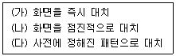
- (가), (나), (다)
- (나), (다), (가)
- (다), (가), (나)
- (가), (다), (나)
(정답률: 80%)
70. 다음 중 FM 방식 송신기에서 사용하는 프리 엠파시스(Pre Emphasis)의 역할에 대해 옳은 것은?
- 음성 신호를 증폭한다.
- 주파수 편이량을 조절한다.
- 고역에서 신호대 잡음비를 개선한다.
- 고주파 전력을 안테나에 공급한다.
(정답률: 73%)
71. 라이도 방송 수신기의 성능특성 파라메타에는 감도, 신뢰도, 충실도, 안정도가 있다. 다음 중 감도를 향상시키는 방법이 아닌 것은?
- 주파수 변환기의 이득을 크게 한다.
- 내부 잡음이 적은 증폭기를 사용한다.
- 대역폭을 필요 이상으로 넓게 하지 않는다.
- 전원 전압을 높인다.
(정답률: 78%)
72. 다음 중 2개 이상의 신호를 증폭하는 경우 증폭기의 3차 비직선 왜곡에 의해서 다른 신호 내용이 겹치는 현상은?
- 상호변조(Inter Mosulation)
- 비트(Beat) 방해
- 혼변조(Cross Mosulation)
- CTB(Composit Triple Beat)
(정답률: 78%)
73. 디지털유선방송국설비에서 대역내 채널에서 사용하는 오류정정 방식은?
- 격자부호변조(Trellis Coded Modulation)
- 리드-솔로몬 부호(Reed-Solomon Code)와 격자부호변조(Trellis Coded Modulation)
- 길쌈 인터리빙(Convolutional Interleaving) 방식
- 리드-솔로몬 부호(Reed-Solomon Code)
(정답률: 69%)
74. 디지털방송 시스템 정보를 포함하여 가상채널정보, 자막, 데이터방송과 같은 기타 부가서비스 정보 그리고 EPG 정보 등 DTV 서비스에 필요한 정보를 관리하는 것은?
- STT
- VCT
- DVB-SI
- PSIP
(정답률: 68%)
75. 텔레비전 방송송신용 안테나가 아닌 것은?
- 슈퍼 게인 안테나
- 헬리컬 안테나
- 슈퍼턴 스타일 안테나
- 야기 안테나
(정답률: 76%)
76. IPTV 셋톱박스(Settop Box)에 관한 내용으로 옳지 않은 것은?
- TV와의 연결을 위한 인터페이스가 요구된다.
- TV 시청 채널 변경을 위하여 IGMP가 동작한다.
- 네트워크와의 연결을 위한 인터페이스가 요구된다.
- 멀티캐스트 스트리밍 트래픽을 수신하기 위하여 PIM이 동작한다.
(정답률: 70%)
77. 다음 중 방송국 송신설비의 급전선으로서의 요건으로 해당되지 않는 것은?
- 손실이 될수록 적을 것
- 정비 점검이 용이할 것
- 급전선의 정수(定數)가 최대치로 변할 것
- 건설비 비용이 적을 것
(정답률: 70%)
78. 다음 중 M/W(Microwave) 안테나회선의 송신기출력(Pt)이 10[dBm]이고, 송신안테나의 이득(Gt)은 30[dB], 수신안테나의 이득(Gr)은 5[dB], 자유공간 손실(L)은 5[dB]일 때, 수신기전력(Pr)는?
- 40[dBm]
- 30[dBm]
- 20[dBm]
- 10[dBm]
(정답률: 74%)
79. 다음 중 디지털송신기에서 순간적으로 발생하는 Burst신호 간섭으로부터 전송된 신호를 보호하기 위해 데이터 스트림을 분산시키는 기술에 해당하는 것은 무엇인가?
- Randomizer
- R/S Encoder
- Interleaver
- Trellis Encoder
(정답률: 67%)
80. 다음은 시스템 사용 시 갖추어야 할 중요한 장비이다. 무엇에 대한 설명인가?
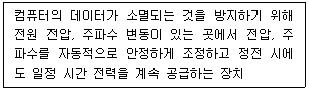
- UPS
- GPS
- VGS
- CEPS
(정답률: 79%)
5과목: 전자계산기 일반 및 방송설비기준
81. 중앙 연산 처리 장치에서 마이크로 동작(Micro-Opreation)이 순서적으로 일어나게 하려면 무엇이 필요한가?
- 스위치(Switch)
- 레지스터(Register)
- 누산기(Accumulator)
- 제어신호(Control Signal)
(정답률: 77%)
82. 두 비트 값이 같은지를 판단하기 위해 사용할 수 있는 가장 적절한 게이트는?
- AND
- OR
- NOR
- XNOR
(정답률: 72%)
83. 다음 중 순차파일(Sequential File)의 특징이 아닌 것은?
- 레코드가 키 순서로 편성되므로 처리 속도가 빠르다.
- 어떠한 입·출력 매체이세도 처리가 가능하다.
- 이전의 레코드를 탐색하려면 파일을 되돌리면 된다.
- 필요한 레코드를 추가하는 경우 파일 전체를 복사해야 한다.
(정답률: 72%)
84. 다음 중 그레이 코드 10110110을 2진수로 변환한 것으로 맞는 것은?
- 11011011
- 10101101
- 01001100
- 01101011
(정답률: 75%)
85. 다음 중 분산 처리 시스템에 대한 설명으로 틀린 것은?
- 중앙집중형시스템 개념과는 반대되는 시스템이다.
- 한 업무를 여러 컴퓨터로 작업을 분담시킴으로써 처리량을 높일 수 있다.
- 보안성이 매우 높다.
- 업무량 증가에 따른 점진적인 확장이 용이하다.
(정답률: 87%)
86. 다음 중 사용자가 단말기에서 여러 프로그램을 동시에 실행시키는 기법은?
- 스풀링(Spooling)
- 다중 프로그래밍(Mutil-programming)
- 다중 처리기(Multi-processor)
- 다중 태스킹(Multi-tasking)
(정답률: 74%)
87. 다중프로그래밍(Multiprogramming) 처리방식을 운영하기 위해서 필요한 방법들로 관련성이 없는 것은?
- 스풀링(Spooling)
- 장치 드라이버(Device driver)
- 가상메모리(Virtual memory)
- 인터럽트 입출력(Interrupted I/O)
(정답률: 48%)
88. 다음 중 자료가 발생할 때 마다 즉시 처리하여 응답하는 방식은?
- 일괄 처리 시스템
- 실시간 처리 시스템
- 시분할 처리 시스템
- 병렬 처리 시스템
(정답률: 87%)
89. 다음 중 오퍼레이팅 시스템에서 제어 프로그램에 속하는 것은?
- 데이터 관리프로그램
- 어셈블러
- 컴파일러
- 서브루틴
(정답률: 88%)
90. 다음 중 명령어를 실행하기 위해 기본적으로 필요한 CPU 내부 레지스터에 대한 설명으로 옳은 것은?
- IR(Instruction Register)는 기억장치에 저장될 데이터 혹은 기억장치로부터 읽혀진 데이터가 일시적으로 저장되는 버퍼레지스터이다.
- MAR(Memory Address Register)는 가장 최근에 인출된 명령어가 저장되어 있는 레지스터이다.
- MBR(Memory Buffer Register)는 프로그램 카운터에 저장된 명령어 주소가 시스템 주소 버스로 출력되기 전에 일시적으로 저장되는 주소 레지스터이다.
- AC(Accumulator)는 CPU 내에서 산술 논리 장치의 중간 결과를 저장하는 레지스터이다.
(정답률: 76%)
91. 과학기술정보통신부장관 또는 방송통신위원회의 방송국 추천, 허가, 승인 등록 시 심사하여 공포하여야 하는 사항이 아닌 것은?
- 재정 및 기술적 능력
- 방송발전을 위한 지원계획
- 지역적, 사회적, 문화적 필요성과 타당성
- 광고 프로그램 내용의 적절성
(정답률: 87%)
92. 다음 용어 중 보도·교양·오락 등 다양한 방송분야 상호간에 조화를 이루도록 방송프로그램을 편성하는 것은?
- 종합편성
- 전문편성
- 특수편성
- 방송편성
(정답률: 84%)
93. 디지털위성방송채널의 신호대잡음비 기준값으로 알맞은 것은?
- 10[dB] 이상
- 12[dB] 이상
- 14[dB] 이상
- 20[dB] 이상
(정답률: 73%)
94. 한국방송통신전파진흥원에서 추진하는 사업과 관계 없는 것은?
- 전파 이용 촉진에 관한 연구
- 전파·방송·통신 관련 국내외 기술에 관한 정보의 수집·조사 및 분석
- 전파·방송·통신 관련 사회복지 활동
- 전파·방송·통신 관련 연구지원 및 교육
(정답률: 80%)
95. 종합유선방송의 구내전송선로설비에서 사용되는 분배기, 분기기, 직렬단자, 보호기의 반사손실을 몇 [dB] 이상이어야 하는가?
- 5[dB]
- 10[dB]
- 15[dB]
- 20[dB]
(정답률: 63%)
96. 종합유선방송국설비와 전송선로설비의 분계점에 대한 설명으로 잘못된 것은?
- 전송선로설비와 구내전송선로설비의 분계점은 도로와 택지 또는 공통주택단지의 각 단지와의 경계점으로 한다.
- 분계점이 사업자간 상호협의가 이루어지지 아니하는 경우에는 방송통신위원회에 조정을 신청할 수 있다.
- 텔레비전인코더에 광송신 기능이 내장된 경우에는 종합유선방송국과 전송망사업자가 상호 협의하여 정하는 점을 분계점으로 한다.
- 유선방송국설비이므로 전송선로설비가 무선방식인 경우에 대해서는 별도로 분계점을 정하지 아니한다.
(정답률: 75%)
97. 유선방송국설비에 대한 종사자의 자격과 정원에 대한 설명으로 잘못된 것은?
- 종합유선방송사업자·중계유선방송사업자 및 음악유선방송사업자가 확보하여야 할 종사자의 자격과 정원이 정해져 있다.
- 유서방송국설비를 공동으로 사용하는 경우, 종합, 중계 및 음악 유선방송사업자가 확보하야 할 종사자는 각각의 방송국이 갖추어야 할 자격과 정원을 합한 수의 1/2로 한다.
- 유선방송국설비를 공동으로 사용하는 경우 산출된 정원이 정수가 아닌 경우에는 소수점 이하를 버리되, 1인 미만인 경우에는 1인으로 한다.
- 종사자는 유선방송국 설비의 방송신소 측정·시험 등 방송품질 유지를 위한 관리 및 인증업무를 수행하여야 한다.
(정답률: 60%)
98. 종합유선 방송국이 사용하는 주 전송장치의 전송방식을 지정하거나 변경하도록 할 수 있는 경우가 아닌 것은?
- 기술의 발전에 따라 전송방식을 변경할 필요가 있는 경우
- 방송구역의 규모 또는 형태에 따라 특정한 전송방식의 사용이 필요한 경우
- 전송선로설비와 주 전송장치의 호환성을 확보하기 위하여 필요한 경우
- 주 전송장치의 전송방식을 부호화 변조방식으로 변경할 경우
(정답률: 80%)
99. 다음 중 인터넷 멀티미디어 방송 제공사업에 필요한 선로기반설비에 해당하지 않는 것은?
- 인공 및 수공
- 배관 및 배선반
- 통신구
- 관로 중 운용중인 관로
(정답률: 71%)
100. 유선방송국용 전원설비는 최대로 사용되는 때의 전력을 안정적으로 공급할 수 있는 용량을 가진 것으로서 전압·전류의 변동 허용범위는 몇 [%] 이내로 유지할 수 있는 것이어야 하는가?
- ±1
- ±5
- ±10
- ±15
(정답률: 73%)